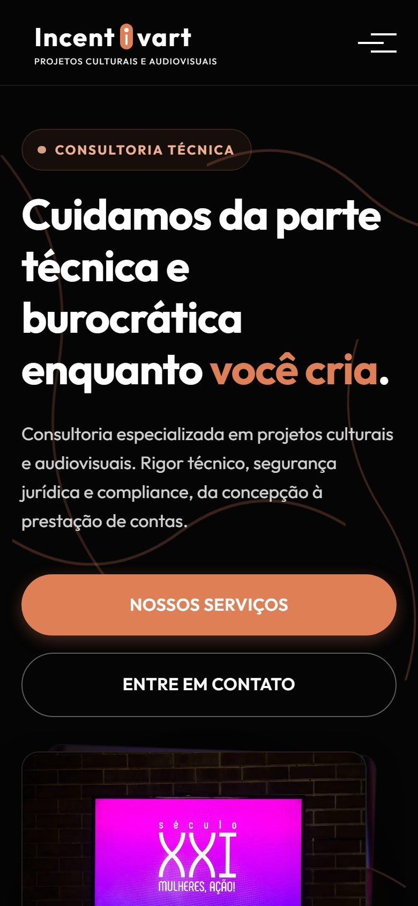
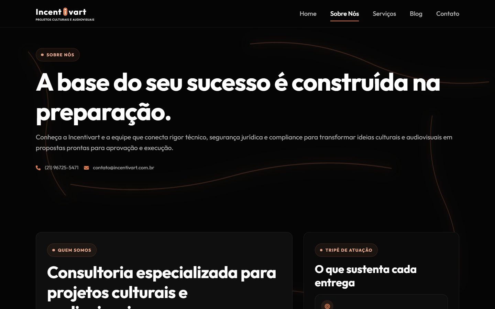
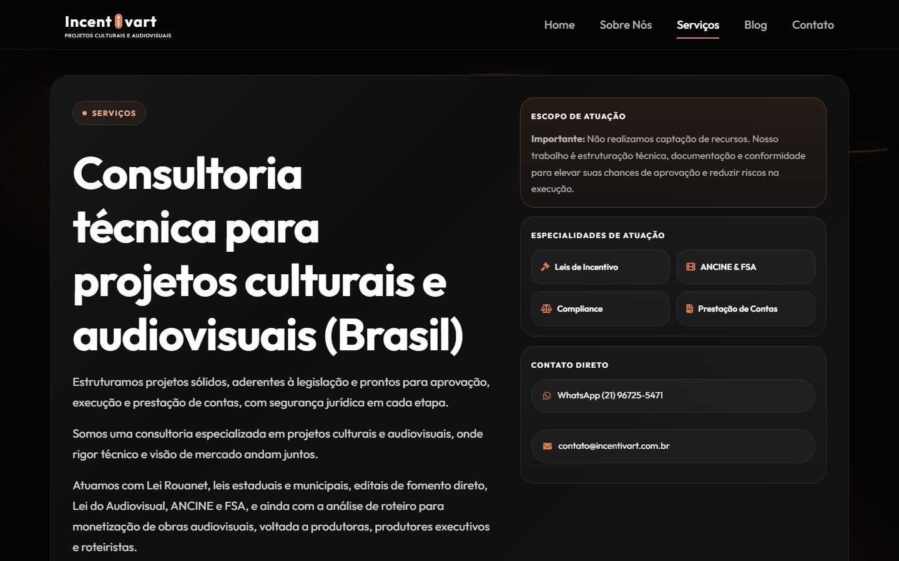

Estudo de caso 02 · Freelance
Incentivart
O site de uma consultoria técnica para projetos culturais e audiovisuais, feito em dupla. Desenhei as telas e desenvolvi parte do front-end.
- Meu papel
- Design das telas e parte do front-end
- Equipe
- Dupla: meu parceiro fez o back-end e a maior parte do código
- Período
- Set. 2025 — atual
- Status
- Site no ar; blog em desenvolvimento

Contexto
A Incentivart é uma consultoria técnica para projetos culturais e audiovisuais. Ela ajuda produtoras e realizadores a estruturar projetos para leis de incentivo, editais, ANCINE e FSA, da concepção à prestação de contas.
O site apresenta a empresa, explica os serviços e leva aos canais de contato. Trabalho nele como freelancer desde setembro de 2025.
O que o site comunica
O site fala de um serviço técnico e burocrático (leis de incentivo, compliance, prestação de contas) para um público criativo, como produtoras, produtores executivos e roteiristas. A frase de abertura resume essa ponte: "Cuidamos da parte técnica e burocrática enquanto você cria."
Divisão do trabalho
O site foi feito em dupla. A divisão foi esta:
Minha parte
Design e parte do front-end
- Design das telas do site
- Desenvolvimento de parte do front-end
Meu parceiro
Back-end e a maior parte do código
- Back-end
- A maior parte do código do site
Em andamento: o blog do site, que já tem estrutura publicada (busca e filtros por tema), mas ainda não tem posts.
A interface publicada
As telas no ar seguem uma linguagem consistente entre as páginas:
- Tema escuro com laranja como cor de destaque, usado em ações, rótulos e palavras-chave dos títulos.
- Rótulos em pílula que anunciam cada seção, como "Consultoria técnica", "Quem somos" e "Serviços".
- Títulos grandes e diretos, com duas ações claras no topo: conhecer os serviços ou entrar em contato.
- Contato sempre por perto: telefone, WhatsApp e e-mail aparecem nas páginas internas e no rodapé.
- No celular, menu recolhido e botões em largura total.
Processo de design
Do desenho às telas no ar
As telas no Figma e as decisões por trás delas entram aqui quando o material estiver organizado, ao lado das páginas publicadas.
Estado atual
No ar em incentivart.com.br, com as páginas Home, Sobre nós, Serviços, Blog e Contato. O blog tem a estrutura publicada e ainda não tem posts.
Registros
Telas
Capturas do site publicado, feitas em outubro de 2026.


